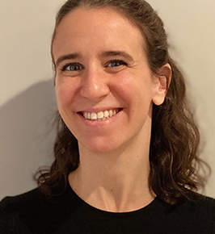
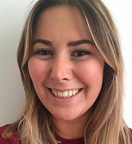
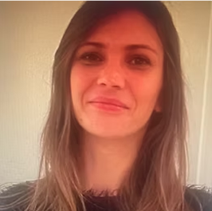
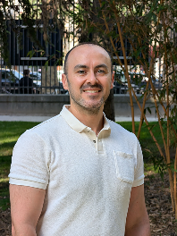

Notre Équipe
Des professionnels passionnés au service de votre santé mentale
Les Professionnels
Dr Nora Hamdani
PsychiatrePsychiatre spécialisée dans l'évaluation et le traitement des troubles neurodéveloppementaux. Le Dr Hamdani apporte une expertise reconnue dans le diagnostic du TSA chez l'adulte et l'accompagnement personnalisé des patients.
Spécialités
- TSA adulte
- Troubles neurodéveloppementaux
- Évaluation diagnostique
Formation
- Doctorat en médecine
- Spécialisation en psychiatrie
- Formation TSA

Dr Isabelle Scheid
PsychiatrePsychiatre expérimentée dans la prise en charge des troubles de l'humeur et des troubles psychotiques. Le Dr Scheid intègre des protocoles thérapeutiques innovants pour un suivi complet et bienveillant.
Spécialités
- Troubles bipolaires
- Schizophrénie
- Troubles de l'humeur
Formation
- Doctorat en médecine
- Spécialisation en psychiatrie
- Formation TCC
Céline Hebbache
PsychologuePsychologue clinicienne spécialisée dans les thérapies cognitivo-comportementales et l'accompagnement des personnes souffrant de troubles anxieux. Son approche bienveillante favorise l'alliance thérapeutique.
Spécialités
- TCC
- Troubles anxieux
- Accompagnement individuel
Formation
- Master en psychologie clinique
- Formation TCC
- Spécialisation anxiété

Laura Guedj
PsychologuePsychologue clinicienne formée aux approches thérapeutiques innovantes. Laura Guedj accompagne les patients dans leur parcours de soins avec empathie et professionnalisme.
Spécialités
- Psychothérapie
- Bilan psychologique
- Accompagnement
Formation
- Master en psychologie clinique
- Formation continue
Stéphanie Langlet
Thérapeute en Remédiation CognitivePsychologue clinicienne spécialisée dans les groupes thérapeutiques et l'entraînement aux habiletés sociales. Stéphanie Langlet anime des ateliers de psychoéducation et d'affirmation de soi.
Spécialités
- Groupes thérapeutiques
- Habiletés sociales
- Affirmation de soi
Formation
- Master en psychologie
- Formation groupes thérapeutiques

Doïna Mazière
PsychologuePsychologue clinicienne formée à l'EMDR et à la prise en charge des traumatismes. Doïna Mazière accompagne notamment les enfants et adolescents dans leur parcours thérapeutique.
Spécialités
- EMDR
- Psychotraumatismes
- Enfants et adolescents
Formation
- Master en psychologie clinique
- Formation EMDR
- Spécialisation enfant

Zeyad Al Salloum
Médecin psychiatreMédecin psychiatre et Praticien Hospitalier à Paris, le Dr Zeyad AL SALLOUM dispose d'une solide expérience acquise en urgences psychiatriques, hospitalisation, CMP, pédopsychiatrie et psychiatrie transculturelle.
Spécialités
- Troubles anxieux
- Troubles bipolaires
- Psychotrauma
Formation
- DIU Psychiatrie pour assistants généralistes
- DU Clinique de l'Adolescent
- Diplôme de Médecine Générale
Rejoignez notre équipe
CEDIAPSY est toujours à la recherche de professionnels passionnés pour renforcer son équipe. Si vous partagez nos valeurs de bienveillance, d'excellence et de collaboration, nous serions ravis de vous rencontrer.
- Environnement de travail stimulant et bienveillant
- Formation continue et supervision
- Travail en équipe pluridisciplinaire
- Locaux modernes et accessibles